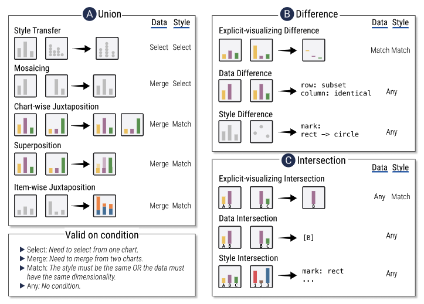

Publications
2023

DMiner: Dashboard Design Mining and Recommendation

2022

Structure-aware Visualization Retrieval
Best Paper Honorable Mention

ComputableViz: Mathematical Operators as a Formalism for Visualization Processing and Analysis

DashBot: Insight-Driven Dashboard Generation Based on Deep Reinforcement Learning
IEEE Transaction on Visualization and Computer Graphics (TVCG).
2022. — Collaborated Project
2021


MultiVision: Designing Analytical Dashboards with Deep Learning Based Recommendation

KG4Vis: A Knowledge Graph-Based Approach for Visualization Recommendation
Best Paper Honorable Mention in IEEE VIS Conference

InfoColorizer: Interactive Recommendation of Color Palettes for Infographics

Deep Colormap Extraction from Visualizations

Learning to Automate Chart Layout Configurations Using Crowdsourced Paired Comparison
2020

MobileVisFixer: Tailoring Web Visualizations for Mobile Phones Leveraging an Explainable Reinforcement Learning Framework

Augmenting Static Visualizations with PapARVis Designer
2019

LassoNet: Deep Lasso-Selection of 3D Point Clouds

DeepDrawing: A Deep Learning Approach to Graph Drawing

Towards Automated Infographic Design: Deep Learning-based Auto-Generation of Extensible Timeline
2018